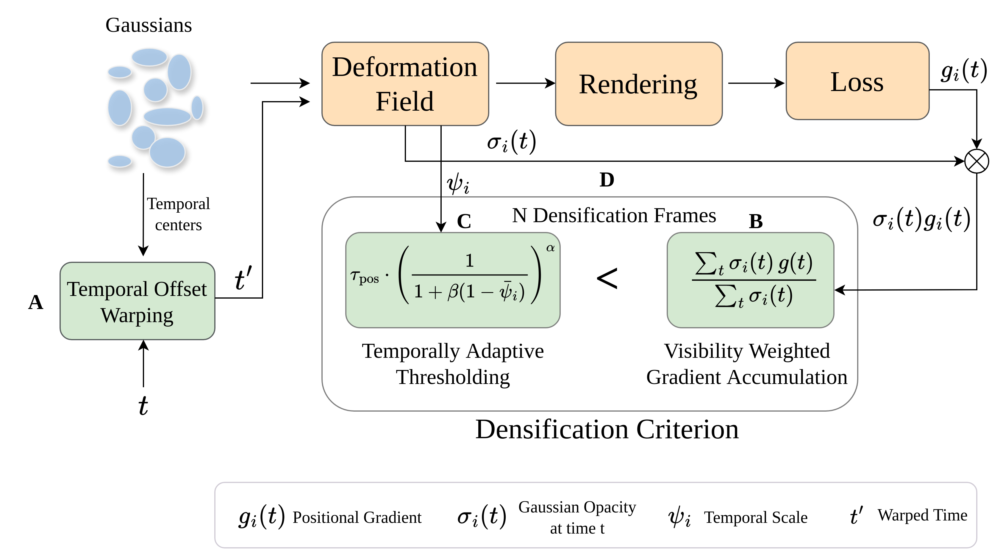

Despite modeling temporal motion, dynamic 3D Gaussian Splatting (3DGS) methods still inherit a static densification strategy ill-suited for dynamic scenes. This neglect of temporal behavior leads to under-reconstructed and blurry dynamic regions, as short-lived Gaussians receive sparse supervision and fail to densify effectively.
We propose a Visibility-Aware Densification (VAD) framework that integrates temporal visibility into the densification process, ensuring that Gaussians are refined based on their actual temporal presence. A Temporally-Adaptive Thresholding (TAT) mechanism further adjusts each Gaussian’s densification threshold according to its temporal lifespan, promoting balanced refinement of both static and dynamic regions. Finally, a Temporal Offset Warping (TOW) design enhances deformation capacity around temporal centers, extending the lifespan of highly dynamic Gaussians and facilitating more effective densification.
Our approach achieves substantial improvements in the visual quality of dynamic regions, outperforming existing methods across three dynamic multi-view benchmark datasets. Moreover, the proposed VAD module generalizes across diverse dynamic 3DGS methods, consistently improving dynamic reconstruction as a plug-and-play component.

TAD-GS consistently produces sharper reconstructions of dynamic regions compared to existing methods.
The plug-and-play VAD module consistently improves dynamic reconstruction across existing baselines.
@article{sandu2026tadgs,
author = {Sandu, Vikram and Pathak, Mayurdeep and Soundararajan, Rajiv},
title = {Temporally Aware Densification for Dynamic 3D Gaussian Splatting},
journal = {ECCV},
year = {2026},
}